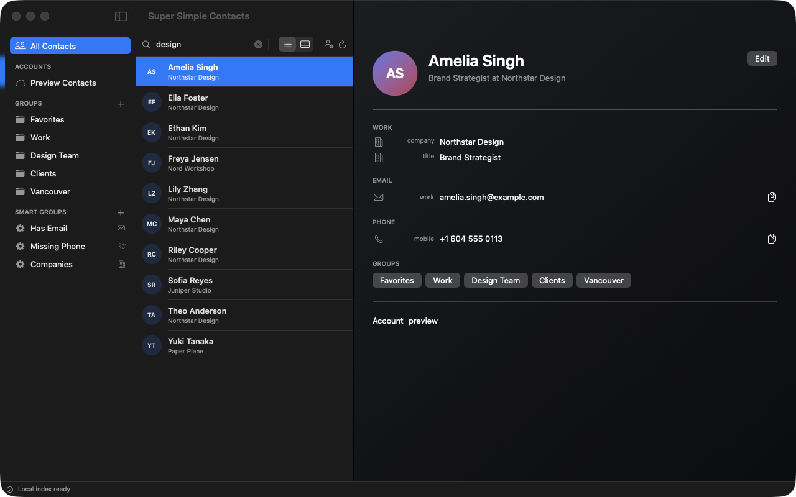
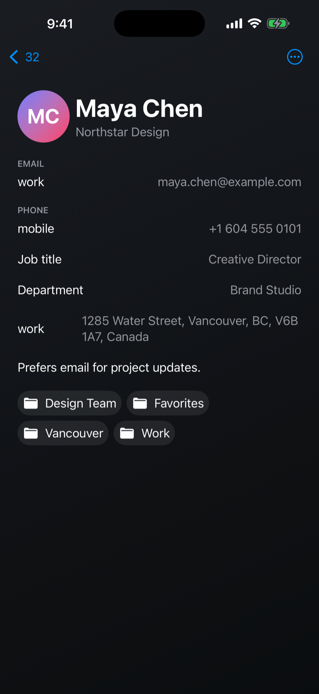
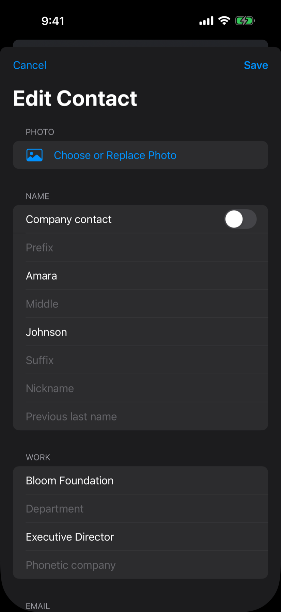
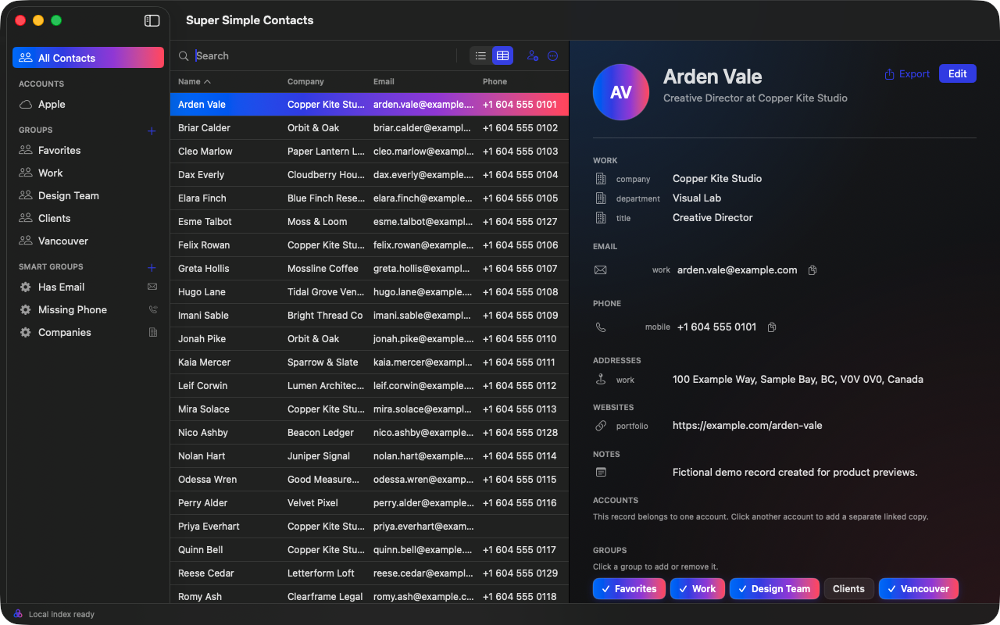
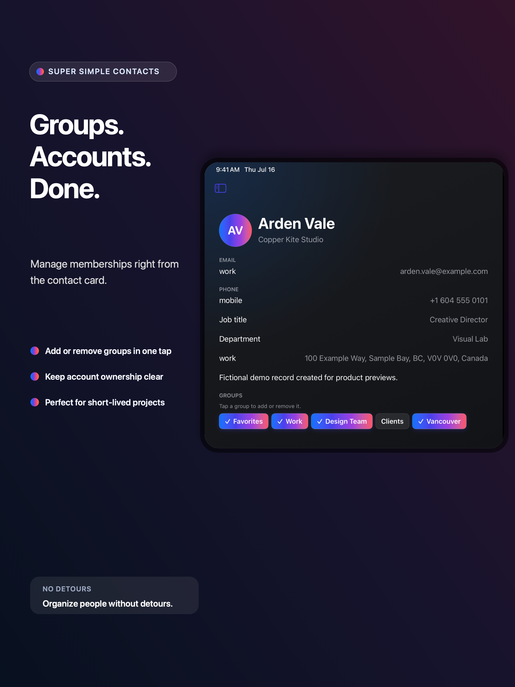

The super-fast Contacts replacement for Mac, iPhone, and iPad. Bring Apple, Google, and Outlook together, manage groups in place, and find anyone before you finish typing.
RaycastInstall the Extension ↗AlfredInstall the Extension ↗
Command Bar⌘ F

macOS

iOS
< 50 mslocal search target
01 Inline group management02 Every account, one view03 Authenticate once04 Enterprise sync controls
Super fast. Genuinely simple.
Contact management should feel instant, intuitive, and beautifully obvious.
No hunting through edit screens. No wondering which account owns a record. Just a modern, native workspace designed for speed and ease of use.
Fast enough to become a habit
Ten thousand contacts. One instant answer.
The command bar auto-populates as you type across names, companies, notes, numbers, email addresses, groups, and accounts. The index lives on your device and stays useful offline.
< 50 mslocal search target
< 1 secuseful UI at 10,000 contacts
63.07 msverified worst delay across 300 stress-test scrolls
Interactive search previewOffline
Sample local index8.4 ms
Try a name, company, email, phone number, group, or account.
Any permutation. One clean address book.
Sync It All in Every Direction.
Sync, import, export, and manage any permutation of Apple, Google, and Outlook contacts. Authenticate once, keep desktop and iOS in sync, and use enterprise controls when your organization needs added protection.
Apple ContactsG Google Contacts■ Outlook personal and work
Power when you need it. Simplicity everywhere else.
Every detail is designed to make a powerful address book feel clear, calm, and obvious. Super simple to use and private by design.
01
Simple group management, right from the contact card.
Add or remove contacts from groups and accounts without leaving the card. Spin up ephemeral project groups, organize a team, then move on without losing context.
Contact card Saved
AV
Arden Vale
Copper Kite Studio
Email
arden.vale@example.com
Phone
+1 604 555 0101
Groups
Inline
Click a group to add or remove it.
3 groups on this contact
Membership updates as you click
02
Duplicates, without drama.
Compare likely matches. Link locally, keep both, or never match again. Provider records are never silently merged or deleted.
GR
Grace HopperApple
92% match
GH
Grace M. HopperMicrosoft
03
Edit the whole story.
People and companies, custom labels, photos, nicknames, job details, addresses, birthdays, relationships, websites, social profiles, messaging accounts, preferred values, and notes.

The complete 1.0
No hidden tier. No shortened mobile edition.
01 Search and workspace
Instant local-first search across every contact field, group, and account
Structured queries, saved searches, compact lists, and sortable tables
Native three-pane Mac workspace, adaptive iPad split view, and fast iPhone navigation with quick actions, scanning, and capture
One-click field or formatted-card copying, drag and drop, multi-selection, batch editing, and undo
02 Accounts and safe sync
Apple Contacts integration
Multiple Google Contacts accounts through the Google People API
Multiple Outlook personal and work accounts through Microsoft Graph
Authenticate once and keep Mac, iPhone, and iPad in sync asynchronously
Enterprise sync management with reviewed outbound publishing, durable retries, conflict review, status, and diagnostics
Clear ownership rules, per-account outbound policies, and queued edits that survive incoming refreshes
03 Groups and data quality
Add or remove group membership inline from any contact card on Mac, iPhone, and iPad
Standard groups, nested smart-group rules, and saved searches
Drag-and-drop and bulk group membership changes
Reviewable duplicate detection with local-link, keep-both, and never-match decisions
Import validation, data-quality warnings, and safe cleanup previews
04 Import, export, recovery, and print
vCard and CSV import with preview, field mapping, validation, duplicate detection, and destination selection
vCard, configurable CSV, and formatted-text export
Recently Deleted with restore and recoverable bulk operations
Contact sheets, labels, and envelope printing on Mac
05 Alfred and Raycast
Search the same on-device contact index from either launcher
Preview results, copy a preferred detail, start an email or call, and open the selected contact
Separate access keys protect the read-only connection to each launcher
No second contact database and no access to provider credentials
06 Privacy and reliability
Offline search and local-first editing that never waits on a network request
Persistent OAuth credentials in Keychain and encrypted provider traffic sent directly to the provider you choose
Private iCloud sync for supported app metadata such as smart groups and link decisions
Light, Dark, and Automatic appearance across Mac, iPhone, and iPad
No ads, tracking, analytics SDKs, or contact-data sales
Raycast + Alfred
Take Immediate Action.
Search the same on-device contact index from Raycast or Alfred. Find a person, copy a detail, start an email or call, and open the full contact without breaking your flow.
● Paired, device-only, read-only access. No second contact database. No provider credentials.
cp⌥ Space
Search Super Simple Contacts · Raycast0.4 ms local
Made for each Apple screen
One contact manager. Three native experiences.
A dense, keyboard-friendly macOS workspace on Mac. An adaptable iPadOS split view on iPad. Fast iOS navigation on iPhone.

Mac workspace

iPad group managementiPhone instant search
Privacy is not an upgrade
Your contacts are yours. Full stop.
No ads. No tracking. No sale of contact data. Search happens on your device, persistent OAuth credentials are kept in the system Keychain, and supported sync connections use encrypted, direct provider connections.
Local search that works offline
Direct provider connections with no proxy
Access-key-protected, device-only, read-only Alfred and Raycast integration
Durable per-account retry queues
A simpler Apple Contacts alternative
One address book for every Apple screen and every account.
Super Simple Contacts gives Mac, iPhone, and iPad users a private home for Apple, Google, and Microsoft contacts.
Is Super Simple Contacts an Apple Contacts alternative?
Yes. It is a native replacement for Apple Contacts on Mac, iPhone, and iPad, with faster search, smart groups, duplicate review, safe sync, and complete editing tools.
Can I sync Google and Microsoft contacts with my Mac and iPhone?
Yes. Connect multiple Google Contacts accounts and Microsoft personal or work accounts alongside Apple Contacts. Account ownership stays visible, and saved changes sync automatically with the account that owns them.
Does Super Simple Contacts work on macOS, iOS, and iPadOS?
Yes. Super Simple Contacts has native experiences for Mac, iPhone, and iPad, with layouts designed for each Apple device.
Can I search contacts from Raycast or Alfred?
Yes. Optional, access-key-protected Raycast and Alfred integrations search the same on-device contact index. Find a person, copy a detail, start an email or call, and open a contact without leaving your Mac launcher.
Your people are waiting
The fast, feature-rich Contacts replacement for Mac, iPhone, and iPad.